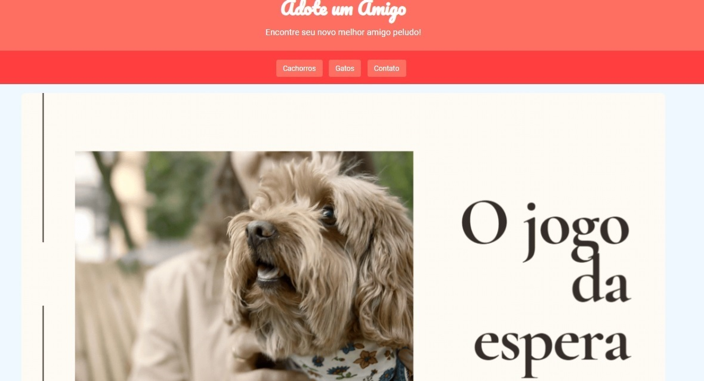
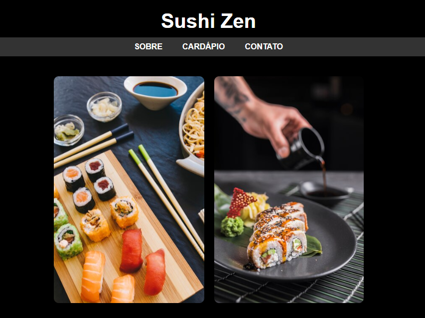

Este é um espaço dedicado a mostrar minhas criações e habilidades.
Adoção de Pets
Projeto de um site fictício direcionado à adoção de pets
Para acessar o site, clique aqui.
Restaurante de Sushi
Projeto de um site fictício para restaurante de sushi
Para acessar o site, clique aqui.